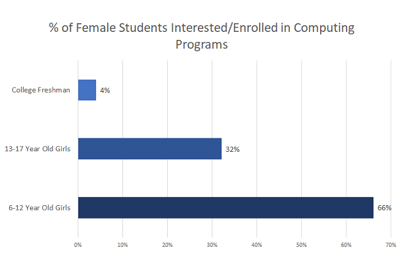

As a child, Sarah had always found it difficult to be engaged in tech. She used to view science and math as masculine fields and for that particular reason, had always been intimidated by it. She did, however, join after- school tech programs available at her school, but these programs were largely made up of boys, and left Sarah feeling a little isolated. Despite all of this, Sarah was still set on becoming successful in tech. But she had no idea what “successful” looked like. There were very few celebrated women in tech, and it was hard for her to identify the vital skills and characteristics necessary for a woman to achieve success in tech.
These obstacles were persistent as she went through school, and eventually university, and was enough to discourage anyone from pursuing a career in tech. In fact, the issues outlined here are the reasons girls’ participation in computer science continuously drops as they grow older. According to Girls Who Code, the biggest drop off occurs between the ages 13-17. Aproximately 66% of girls aged 6-12 are interested/enrolled in computer science programs, whereas the same can be said for only 32% of girls aged 13-17, and when university comes around, only 4% of high school girls select computer science as a degree.

A large reason for this is due to the gender bias girls face when interested in tech. This, combined with the lack of celebrated women role models in the industry, considerably reduces the number of women in the tech pipeline. This also affects women who actually do make it to the workforce, as the majority feel isolated, and sometimes even discriminated against. They are also more vulnerable to imposter syndrome which, according to Time, is a psychological pattern in which one doubt’s one’s own accomplishments and has a persistent fear of being dubbed as a fraud.
To combat this, we must instill interest and confidence in tech at a young age, and ensure girls remain engaged throughout high school and university, by reinforcing that kids should not be limited by gender bias, celebrate the accomplishments of women currently in tech, emphasize the necessary skills for tech-related jobs, instill confidence by praising the process instead of the outcome, and providing a clear pathway for young girls like Sarah looking to pursue a career in tech, all the way from elementary school to the workforce.
- Offer free after-school programs, We will partner with Girls Who Code, a not-for-profit organization that aims to close the gender gap in tech. They hold free after-school programs for kids from grades 3 to 12 and provide kids with the opportunity to work on projects that solve real-life problems that they actually care about. Girls Who Code have 30,000 college-aged alumni who are majoring in computer science at a rate which is 15x the national average. What we will do additionally is to provide role models for these kids, so we should partner with local schools to hold events with accomplished women in tech as speakers.
- Create university clubs, We will also create university clubs for girls to join after they graduate from high school to serve as a point of contact between ourselves and university campuses across North America, and to maintain interest in tech amongst female undergraduates. These clubs will aim to create an inclusive community within their university campuses, to reduce the possibility of women feeling isolated during university. We also hope to provide mentors and offer campus programs, such as Hackathons, Coding Boot Camps, Networking Events, etc.
- Offer alumni benefits, Finally, to ensure that girls are still motivated to join the tech industry, every participant in our school and university programs will have access to our alumni benefits. We will offer scholarships in tech related positions at select universities and provide internship opportunities at our companies. Moreover, alumni will have access to our professional network.
We believe that, should these suggestions come to fruition, girls like Sarah remain engaged in tech throughout their academic career, and have a clear pathway to a career in the tech industry with no obstacles.